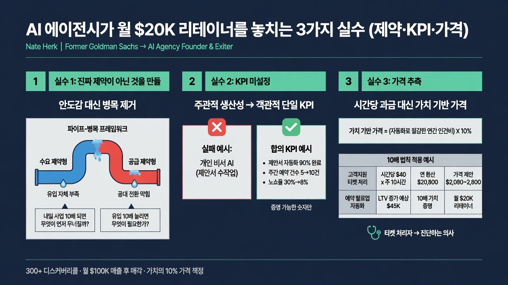

Nate Herk | AI AutomationMORNING DIGEST · 2026-08-25 · Nate Herk | AI Automation🎬 영상
AI 에이전시가 월 $20K 리테이너를 놓치는 3가지 실수 (제약·KPI·가격)

01핵심 개요
항목
내용
형식
컨퍼런스 강연 실황(몬테네그로 Workless AI 행사, 발표 + Q&A)
화자
Nate Herk — 前 Goldman Sachs 애널리스트, AI 자동화 에이전시 설립·매각 경험자, 유튜브 채널 "Nate Herk \
AI Automation" 운영
핵심 문제의식
클라이언트가 요청한 것(예: "개인 비서 AI")을 그대로 만들어주면 사업의 진짜 병목을 해결하지 못해 "낸 돈만큼 가치를 못 받았다"는 불만으로 이어진다
기준 수치
월 $20,000 리테이너 최소 계약, 월 매출 $100,000 달성 후 에이전시 매각, 디스커버리콜 300회 이상 진행, 가치의 10%를 가격으로 책정
핵심 내용
(1) 사업의 진짜 제약(공급/수요 병목)을 진단하라 (2) 착수 전 단일 KPI를 클라이언트와 합의하라 (3) 시간당 요금이 아닌 가치 기반으로 가격을 책정하고 10배 수익률을 증명하라
02핵심 기능/내용 구조
실패담으로 문제 제기: 23세에 퇴사 후 개인 비서 AI 에이전트를 만들어준 클라이언트로부터 "우리가 지불한 만큼의 가치를 못 받고 있다"는 항의를 받았다. 원인은 세 가지 실수 — (1) 만든 것이 사업의 진짜 제약이 아니었고 (2) KPI를 정하지 않았고 (3) 가격을 감으로 정했다는 점이었다 (00:00).
"티켓 처리자"에서 "진단하는 의사"로: 저자는 사업을 스케일업하기 전 큰 깨달음을 얻었다고 말한다. 단순히 요청받은 티켓을 처리하는 사람에서 벗어나, 고객이 느끼는 통증(pain)을 진단하는 "의사" 역할로 진화해야 하며, 그다음엔 그 가치를 증명까지 해야 한다는 것이다 (02:51).
골드만삭스 경험에서 얻은 3가지 교훈: (1) 지루하지만 결정론적인(deterministic) 자동화가 더 만들기 쉽고 평가하기 쉬우며 리스크가 적다 (2) 대기업은 변화관리 이슈와 규제 때문에 AI 도입 속도가 느리다 (3) 자신의 가치를 스스로 드러내지 않으면 인정받지 못한다 — 회의록을 자동화해 보냈지만 상사가 발표자 이름조차 기억 못하고 "Arthur, 잘했어"라고 답장한 일화를 예로 든다 (05:32).
실수 1: 진짜 제약이 아닌 것을 만듦 — "안도감을 파는 것": 사업은 병목을 제거해야만 성장한다. 클라이언트들은 바이럴 영상이나 이사회 압박, 경쟁사의 LinkedIn 게시물을 보고 "AI 에이전트가 필요하다"고 말하지만, 이는 실제 필요가 아니라 "우리도 AI 전략이 있다"고 말할 수 있는 안도감(relief)을 사는 것에 가깝다. 300회 이상의 디스커버리콜에서 깨달은 것은 고객이 말하는 요청이 진짜 필요와 거의 일치하지 않는다는 점이다 (06:55).
파이프-병목 프레임워크: 사업은 공급 제약형(고객은 몰리는데 응대·전환이 막힘) 또는 수요 제약형(고객 유입 자체가 부족함) 중 하나다. 매출을 파이프 속 물로 비유하면, 공급 제약은 "파이프 중간이 막혀 물이 새는 것", 수요 제약은 "애초에 파이프에 물이 거의 없는 것"이다 (09:48).
의료스파(med spa) 사례와 침묵의 힘: 한 의료스파 원장이 "리드 제너레이션 AI 에이전트"를 요청했지만, 실제로는 예약 노쇼와 사후 팔로업 부재로 LTV(고객생애가치)가 낮은 것이 진짜 문제였다. 저자는 "왜 이 콜을 예약하셨나요?"라고 묻고 침묵을 지켜 상대가 스스로 진짜 통증을 털어놓게 만드는 기법을 강조한다 (11:11).
진단 질문 2가지: 공급 제약형에는 "내일 당장 사업이 10배로 커지면 무엇이 가장 먼저 무너질까요?"(가장 먼저 = 첫 번째 병목), 수요 제약형에는 "내일 당장 유입을 10배로 늘리려면 무엇을 해야 할까요?"라고 묻는다. 하나의 병목을 해결하면 다음 병목이 드러나며, 이것이 바로 리테이너 계약으로 이어지는 방식이다 (12:30).
실수 2: KPI 미설정: 앞서 나온 "개인 비서" 클라이언트의 진짜 원인은 그가 제안서를 손으로 작성하느라 바빴던 것이었다. 사전에 "제안서 자동화 90% 완료"같은 숫자를 합의했다면 명확히 증명할 수 있었을 것이다. "생산성"은 주관적이라 증명이 불가능하지만, "주간 예약 건수를 5건에서 10건으로"처럼 객관적 지표는 증명 가능하다 (13:54, 15:15).
실수 3: 가격을 추측함 — 인센티브의 역설: 시간당 과금은 인센티브가 거꾸로 작동한다(느리고 실력 낮은 개발자가 더 오래 걸려 더 많은 돈을 받게 됨). 저자는 시간당 과금은 신뢰를 쌓는 초기 단계에서만 쓰고, 본격적으로는 가치 기반 가격(value-based pricing)으로 전환해야 한다고 말한다 (17:57).
10배 법칙과 가격 산정 공식: "고객은 투자 대비 10배의 가치를 받는다는 것을 이해해야 한다"는 것이 황금률이다. 방법은 자동화가 대체하는 수작업의 연간 환산 비용을 계산한 뒤 그 10%를 가격으로 책정하는 것이다. 예: 시간당 $40인 직원이 주 10시간 고객지원 티켓을 처리 → 연간 약 $21,000(원문 발화상 "$2,100"이나 문맥상 연 환산액을 의미) 비용 발생 → 그 10%인 약 $2,100~2,800을 프로젝트 가격으로 제시 (19:28).
비용은 가격을 정당화하지 않는다, 가치가 정당화한다: 잔디 깎는 사람이 트럭을 새로 사서 비용이 늘었다고 같은 잔디 작업에 요금을 2배 올리면 고객은 받아들이지 않는다. 마찬가지로 에이전시의 원가(세금, 인건비, API 비용)가 아니라 클라이언트가 얻는 가치가 가격의 근거가 되어야 한다 (22:29).
가격을 깎지 말고 스코프를 줄여라: 가치 산정 결과가 $15,000인데 고객 예산이 $7,000이라면, 가격을 $7,000으로 깎는 대신 "이 자동화는 $15,000 가치이며, 예산에 맞춰 V1으로 기능을 줄여 $7,000 상당을 먼저 제공하고, 다음 분기에 확장하자"고 제안해야 한다. 처음부터 깎아주면 이후에도 계속 깎아달라는 요구를 받게 된다 (23:42).
청중 Q&A 실전 사례: 한 참가자(Allejo)는 수요 제약형(콘텐츠는 있으나 전환 안 됨: 웨비나 참석 20명 중 예약 전환 0건)이었고, 저자는 "세일즈콜에서 반복적으로 나온 문제를 영상 콘텐츠로 전환하라"는 구체적 병목 해소책을 제시했다. 또한 "grill me skill"(AI가 본인을 집요하게 인터뷰하도록 만드는 프롬프트로, 전문지식을 AI 워크플로우에 이식하는 기법)을 소개했다 (25:08, 26:40).
결론: 리테이너로 가는 경로: 첫 프로젝트는 가치 기반 프로젝트 요금으로 시작하고, 병목을 하나씩 해결하며 성과를 수치로 증명한 뒤 "매번 스코핑·가격 협상을 반복하지 말고 계속 함께 일하자"는 제안으로 자연스럽게 월 리테이너로 전환한다 (28:01).
03기술적 맥락
이 강연은 특정 AI 도구나 모델을 다루지 않고, AI 자동화 에이전시의 비즈니스 컨설팅 방법론에 초점을 맞춘다. 다만 몇 가지 기술적 함의가 있다.
결정론적(deterministic) 자동화 우선: 저자는 골드만삭스 근무 경험을 바탕으로, 입력과 출력이 명확히 정의된 규칙 기반/워크플로우 자동화가 확률적(probabilistic) LLM 에이전트보다 구축·검증·리스크 관리 측면에서 유리하다고 강조한다. 이는 "AI 에이전트"라는 유행어보다 실제 문제 해결 여부가 중요하다는 관점과 연결된다.
"AI 네이티브" 컨설턴트의 정의: AI를 모든 곳에 적용하는 사람이 아니라, "언제 AI를 쓰지 않아야 하는지"까지 판단하는 사람이라고 정의한다(예: 채용 병목은 AI 채용 에이전트보다 단순 인력 충원이 더 나을 수 있음).
자동화 유형 사례: 리드 팔로업/예약 알림 리액티베이션 시스템, 제안서 자동 작성(90% 자동화 + 사람 검수), 고객지원 티켓 응대 에이전트, 예약 음성 에이전트(부재중 전화 대응), 콘텐츠 재활용 파이프라인(세일즈콜 인사이트 → 영상 콘텐츠) 등이 언급된다.
"grill me skill": AI에게 사용자를 집요하게 인터뷰하도록 지시하는 프롬프트 기법으로, 전문가의 암묵지(domain expertise)를 명시적 데이터로 추출해 이후 자동화 설계에 반영하는 데 쓰인다.
04전략적 의미
가격 결정권의 이동: 시간당 과금에서 가치 기반 과금으로 전환하면 에이전시는 "얼마나 빨리 일했는가"가 아니라 "얼마나 많은 병목을 제거했는가"로 보상받는 구조가 되어, 고성과 인력·자동화 도구 투자의 인센티브가 정렬된다.
리테이너 전환의 구조적 논리: 단발성 프로젝트가 아니라 지속적 병목 발견·해결 사이클을 제시함으로써, 클라이언트 입장에서도 "매번 재협상"보다 "계속 함께 일하는 것"이 합리적 선택이 되게 만든다. 이는 SaaS의 확장 매출(expansion revenue) 논리와 유사하다.
AI 붐 속 차별화 지점: 시장에 "AI 에이전트를 만들어준다"는 공급자가 넘치는 상황에서, 진단(diagnose)-증명(prove) 역량이 실질적 해자(moat)가 된다는 메시지다. 기술 구현력보다 컨설팅·질문 설계 역량이 에이전시의 지속가능성을 좌우한다는 시사점을 준다.
소규모 에이전시/프리랜서에 대한 실용적 함의: 대형 컨설팅펌의 가치기반 가격 이론(예: Alan Weiss, Jonathan Stark 계열)을 AI 자동화라는 신흥 서비스 영역에 그대로 이식할 수 있음을 보여준다.
05핵심 워크플로우 또는 비교표
단계
목표
핵심 질문/행동
실패 시 결과
1. 제약 진단
사업의 진짜 병목(공급형/수요형) 파악
"10배로 커지면 무엇이 먼저 무너지나요?" / "10배 유입을 어떻게 만드나요?" + 침묵
클라이언트가 원한 것은 만들었지만 사업 성과는 안 바뀜
2. KPI 합의
착수 전 단일 객관적 지표 확정
"완벽하게 작동하면 어떤 모습인가요?"로 기준선(baseline)과 목표(target) 수치 도출
"가치를 못 받았다"는 주관적 불만에 반박 불가
3. 가치 기반 가격
연간 절감/창출 가치의 10%를 가격으로 제시
수작업 비용(시급×시간×52주) 계산 → 10% 산정 → 근거 설명 → 침묵
마진 방어에 매몰되거나 가격 협상에서 스스로 가치 절하
방식
인센티브 구조
장점
단점
시간당 과금
느릴수록 더 많이 받음(역인센티브)
초기 신뢰 구축에 유리, 진입장벽 낮음
비즈니스 확장에 부적합, 우수 인력에게 불리
가치 기반 과금
병목 해결·성과 창출에 비례해 보상
인센티브 정렬, 대형 계약·리테이너 전환 용이
가치 산정과 근거 설명 역량 필요, 신규 에이전시엔 진입장벽
06활용 시나리오
AI 자동화 에이전시 창업자: 디스커버리콜 스크립트에 "10배로 커지면 무엇이 먼저 무너지나요?" 질문과 침묵 기법을 도입해, 클라이언트가 요청한 기능이 아니라 실제 병목에 맞춘 제안서를 작성하는 데 활용할 수 있다.
사내 AI 전환 담당자(내부 컨설턴트): 외부 클라이언트가 아니어도, 사내 예산 승인을 받을 때 "이 자동화 프로젝트가 어떤 병목을 제거하고, 어떤 단일 KPI로 증명할 것인지"를 사전에 임원진과 합의해 예산 승인 이후 성과 입증 리스크를 줄일 수 있다.
프리랜서 개발자/노코드 빌더: 시간당 요금 협상에서 벗어나기 어려운 초보 단계에서, 본 영상의 "연간 환산 비용의 10%" 공식을 활용해 첫 가치기반 견적을 산출해보고 점진적으로 과금 모델을 전환하는 로드맵으로 삼을 수 있다.
에이전시 세일즈/영업 담당자: 가격 협상에서 고객이 예산 부족을 이유로 할인을 요구할 때, 가격을 깎는 대신 스코프를 줄여 V1을 제공하는 협상 스크립트를 준비하는 데 참고할 수 있다.
07현황 및 전망
발표자는 자신의 에이전시를 월 매출 $100,000 규모까지 키운 뒤 매각하고 현재는 유튜브 채널과 무료 커뮤니티("Automation Society")를 통한 교육에 집중하고 있다고 밝힌다. 이는 AI 자동화 서비스 시장이 "누가 더 그럴듯한 데모를 만드는가" 경쟁에서 "누가 더 정확히 병목을 진단하고 성과를 증명하는가" 경쟁으로 성숙해가고 있음을 보여주는 사례로 해석할 수 있다. 발표자는 강연 중 "전체 AI 자동화의 50% 이상이 리드젠/세일즈/마케팅 자동화"라는 통계를 인용하며(단, 정확한 출처는 언급하지 않고 최신성이 낮을 수 있다고 스스로 밝힘), 이 영역의 수요가 여전히 집중되어 있음을 시사한다. 향후에는 가치 기반 가격 산정을 지원하는 표준화된 프레임워크나 도구(ROI 계산기 등)가 에이전시 업계에 더 널리 보급될 가능성이 있으며, 대형 컨설팅펌들도 가격 모델을 지속적으로 실험 중이라는 언급에서 업계 전반의 과금 방식 표준화가 아직 이루어지지 않았음을 알 수 있다.